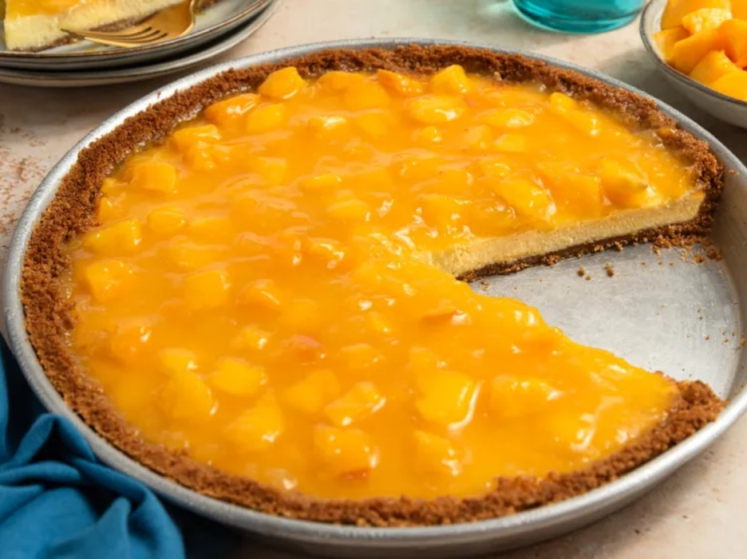

Back to Home
Mango Cheesecake Recipe

Description
This baked mango cheesecake has a smooth and creamy filling, topped with lots of sweet glazed
diced mango. It makes a decadent dessert and is a delicious way to celebrate summer mangoes!
Ingredients
- 2 (8 ounce) packages cream cheese, softened
- ¾ cup white sugar
- 2 large eggs
- 2 teaspoons vanilla extract
- 1 graham cracker crust, unbaked
- 1 ¼ cups mango nectar, divided
- ⅓ cup white sugar
- 2 tablespoons cornstarch
- 2 cups ripe mangoes, peeled, pitted, and diced
Steps
- Gather all ingredients. Preheat the oven to 350 degrees F (175 degrees C).
- Mix 3/4 cup of sugar and cream cheese in a medium bowl. Mix in eggs one at a time, then stir in vanilla.
- Pour mixture into graham cracker crust, and smooth over the top.
- Bake in preheated oven until the edges have puffed up but the middle still jiggles, about 30 minutes.
Allow to cool for 30 minutes, then refrigerate cheesecake until cold, about 3 hours.
- While cheesecake is baking, make the mango topping: Pour 1 cup of mango nectar and 1/3 cup of sugar
into a saucepan; bring to a boil over medium-high heat to dissolve the sugar. Dissolve cornstarch in
the remaining 1/4 cup of mango nectar; stir into the boiling saucepan until thickened and clear, about
30 seconds.
- Place diced mango into a heatproof bowl, and toss with the thickened sauce.
- Allow to cool to room temperature, then pour over the cheesecake. Serve cold.